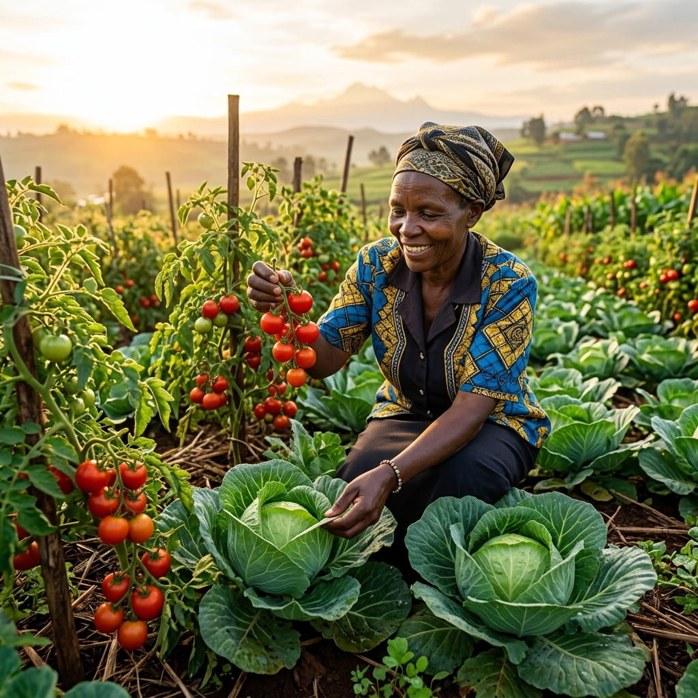

Direct technical response to Ministry of Health Advisory Ref: MOH/ADM/1/2/52 signed by PS Mary Muthoni Muriuki. Integrating lab surveillance, SCS-CN hydrology, and community participatory maps.
A pesticide-safe food ecosystem in Kenya where every fresh produce market delivers clean, non-toxic vegetables to households.
Empower counties, farmers, and traders through real-time market surveillance, 60-70% wash mitigation, and PCPB biopesticide transitions.

Operational solutions addressing the 5 immediate directives issued by Principal Secretary Mary Muthoni Muriuki to County CECMs of Health.
The Ministry emphasizes that the 77.8% residue findings relate to cumulative, long-term exposure risk rather than acute danger from a single meal. County communication must strengthen food safety practices without discouraging vegetable consumption.
SafePlate Kenya serves as the digital intelligence layer for the National Inter-Agency Task Force comprising MOH, PCPB, KEBS, KEPHIS, and the Ministry of Agriculture & Livestock Development.
Real photorealistic image assets of all monitored horticultural crops, specific pesticide risks, and Pre-Harvest Interval (PHI) advisories.
Interactive spatial map featuring county pressure halos, market surveillance nodes, KEPHIS outposts, PCPB regional depots, and community action guides.
Visualization of multi-pesticide contamination load (up to 7 active compounds on kale and spinach) and household wash reduction efficiency.
Transition planning engine mapping PCPB 109 biopesticides, KOAN organic benchmarks, and honest yield gap realities.
PCPB has registered 109 biopesticides. Applied volume share remains at ~2.0%. Certified organic land stands at 171,298 ha / 62,626 certified farms (~0.6% of ag land).
Architectural 7-principle charter, 6-silo spatial join map, and verifiable cryptographic-ready audit trail.
[INIT] SafePlate Kenya v3.0 Loaded (MOH Advisory MOH/ADM/1/2/52)
[MATH] SCS-CN Hydrology Engine Verified: Q(P=55, CN=79) = 15.80 mm
[MATH] 60-70% Household Wash Reduction Parity Verified
[MOH] Referral Gateway to PCPB & KEPHIS Active
PRPI risk rankings across Kenyan horticultural counties based on agrochemical application intensity.
| County | PRPI Score | Risk Tier | Primary Crop | Dominant Actives |
|---|
Toxicological profiles, EU MRL thresholds, WHO hazard classes, half-lives, and water washability reach.
SCS Curve Number surface runoff model ($S = \frac{25400}{CN} - 254$, $I_a = 0.2S$, $Q = \frac{(P-I_a)^2}{P-I_a+S}$). Shared byte-identical engine with Python.
Color-coded step-by-step household preparation guide removing 60–70% of pesticide residues as recommended by the Ministry of Health.
Bilingual advisory messages in Kiswahili, Kikuyu, Dholuo, and English.
Enforce 14-day Pre-Harvest Intervals (PHI), promote PCPB-registered biopesticides, and educate traders on MRL compliance.